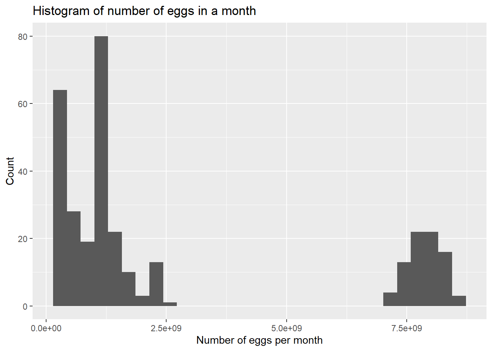
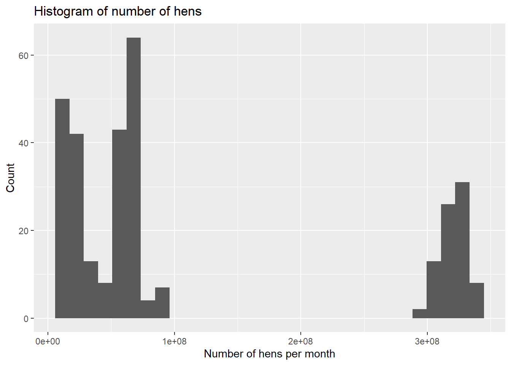
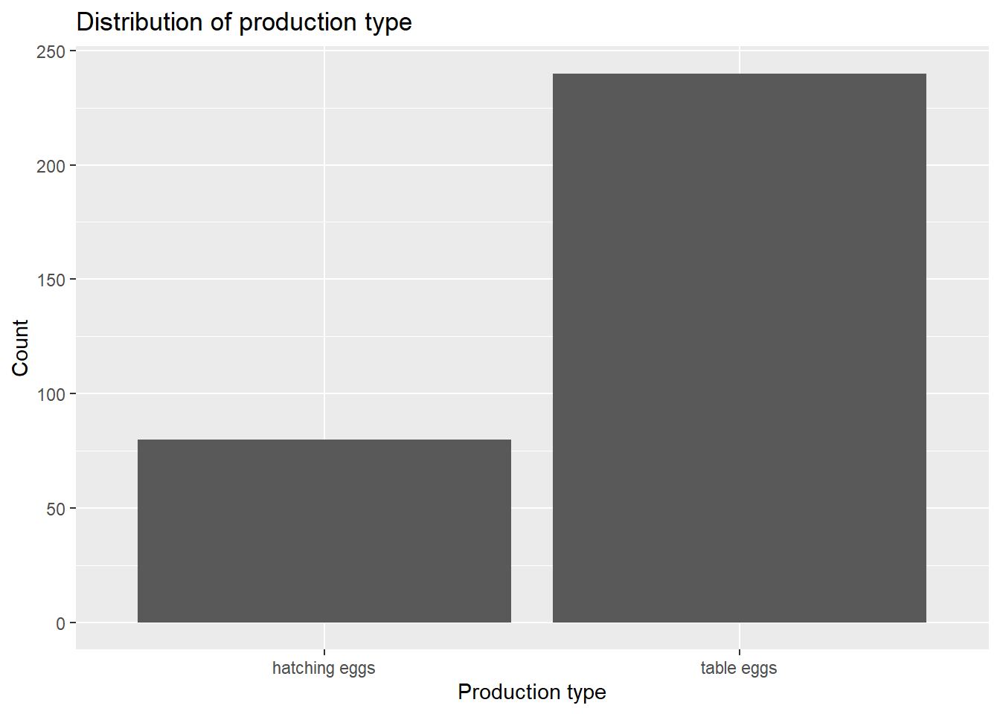
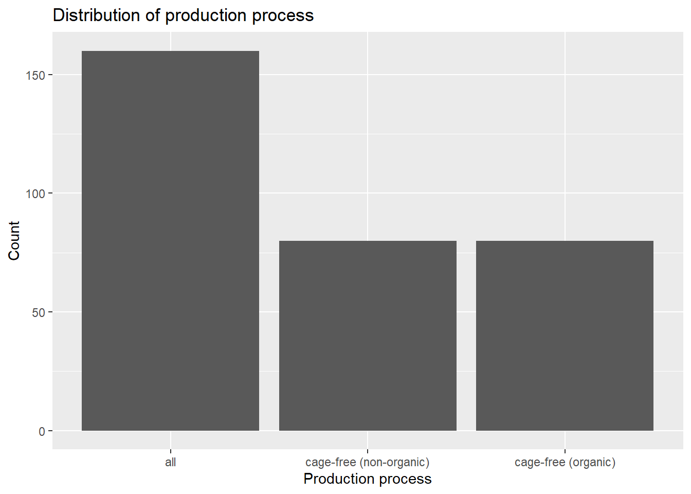
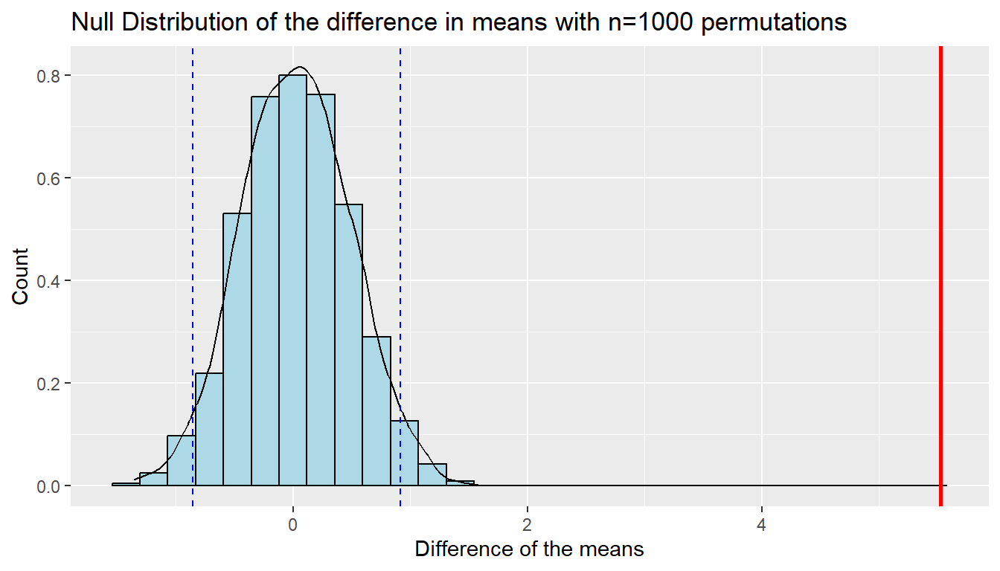

library(readr)
library(dplyr)
library(infer)
library(ggplot2)DSCI 522 Milestone 1
Inferential Analysis for Egg Production
Summary
This analysis aims to determine whether there is a difference in the mean number of eggs produced per hen between table eggs (i.e. unfertilized eggs for consumption) and hatching eggs (i.e. fertilized and will produce a chicken). The data used in this analysis was reported monthly from July 2016 to February of 2023 and was limited to the product type “all” as this includes both conventionally housed and cage-free eggs produced in the United States of America. We conducted a 1000 sample permutation to test our null-hypothesis with an observed test statistic of 5.527 and a p-value of 0. Using a significance level of 0.05 we rejected the null hypothesis in favour of the alternative and concluded that there is a significant difference in the mean number of eggs produced per hen between table and hatching eggs.
Introduction
Eggs and poultry products continue to be a staple in the modern diet (Conrad et al., 2017). Although the proportion of U.S. population consuming eggs remains steady, as the population grows the increase in demand for egg products requires larger yields from farmers (Conrad et al., 2017). Therefore, it is important for members of the egg industry to remain up to date on current egg yields, so that they can make informed economic decisions and continue to supply the population with egg products.
In this analysis we specifically look at the difference in table eggs and hatching eggs. Table eggs are unfertilized eggs that are used for consumption, whereas hatching eggs have been fertilized and will develop into chickens. Comparison of these two egg types can inform farmers on how best to approach their farming practices, as different egg types will require disparate processing strategies with individual costs and market prices (Stemberger, 1958).
Methods
Data
The data used in this analysis was taken from the tidytuesday repository (TidyTuesday, 2023) and was originally sourced from Open Science Framework by Samara Mendez (Mendez, 2023). Each row in the dataset represents summary data for the month, reporting on the type of egg (table vs hatching), the production process (conventional, cage-free, organic), the number of hens, the number of eggs and the source of the data.
Analysis
The number of eggs per hen was calculated from the given data by dividing the total number of eggs produced in each category for the month by the number of hens. This gives a more accurate representation of how many eggs are produced for each group, since the total number of eggs will depend on the number of hens. We then calculated the observed test statistic, difference of the means, and generated a null distribution through a 1000 repetition permutation simulation. From this simulated null distribution we calculated the p-value for our observed test statistic. The R programming language (R Development Core Team, 2023) and the following packages were used to conduct the analysis: dplyr(dplyr, n.d.), readr(readr, n.d.), infer(Bray et al., n.d.) and ggplot(ggplot2, n.d.).
Result & Discussion
EDA
# read in data
egg_prod <- read_csv("../data/egg-production.csv")Rows: 320 Columns: 6
── Column specification ────────────────────────────────────────────────────────
Delimiter: ","
chr (3): prod_type, prod_process, source
dbl (2): n_hens, n_eggs
date (1): observed_month
ℹ Use `spec()` to retrieve the full column specification for this data.
ℹ Specify the column types or set `show_col_types = FALSE` to quiet this message.egg_prod# A tibble: 320 × 6
observed_month prod_type prod_process n_hens n_eggs source
<date> <chr> <chr> <dbl> <dbl> <chr>
1 2016-07-31 hatching eggs all 57975000 1147000000 ChicEggs-09-23…
2 2016-08-31 hatching eggs all 57595000 1142700000 ChicEggs-10-21…
3 2016-09-30 hatching eggs all 57161000 1093300000 ChicEggs-11-22…
4 2016-10-31 hatching eggs all 56857000 1126700000 ChicEggs-12-23…
5 2016-11-30 hatching eggs all 57116000 1096600000 ChicEggs-01-24…
6 2016-12-31 hatching eggs all 57750000 1132900000 ChicEggs-02-28…
7 2017-01-31 hatching eggs all 57991000 1123400000 ChicEggs-03-21…
8 2017-02-28 hatching eggs all 58286000 1014500000 ChicEggs-04-21…
9 2017-03-31 hatching eggs all 58735000 1128500000 ChicEggs-05-22…
10 2017-04-30 hatching eggs all 59072000 1097200000 ChicEggs-06-23…
# ℹ 310 more rowsStep 1: Looking at the first and last few rows of the data. Finding the column data types and the NA values if any.
summary(egg_prod) observed_month prod_type prod_process n_hens
Min. :2016-07-31 Length:320 Length:320 Min. : 13500000
1st Qu.:2018-03-31 Class :character Class :character 1st Qu.: 18174767
Median :2019-11-30 Mode :character Mode :character Median : 62135000
Mean :2019-11-30 Mean :114593880
3rd Qu.:2021-07-31 3rd Qu.:299541500
Max. :2023-03-31 Max. :341166000
NA's :9
n_eggs source
Min. :2.981e+08 Length:320
1st Qu.:4.739e+08 Class :character
Median :1.206e+09 Mode :character
Mean :2.701e+09
3rd Qu.:3.677e+09
Max. :8.601e+09
str(egg_prod)spc_tbl_ [320 × 6] (S3: spec_tbl_df/tbl_df/tbl/data.frame)
$ observed_month: Date[1:320], format: "2016-07-31" "2016-08-31" ...
$ prod_type : chr [1:320] "hatching eggs" "hatching eggs" "hatching eggs" "hatching eggs" ...
$ prod_process : chr [1:320] "all" "all" "all" "all" ...
$ n_hens : num [1:320] 57975000 57595000 57161000 56857000 57116000 ...
$ n_eggs : num [1:320] 1.15e+09 1.14e+09 1.09e+09 1.13e+09 1.10e+09 ...
$ source : chr [1:320] "ChicEggs-09-23-2016.pdf" "ChicEggs-10-21-2016.pdf" "ChicEggs-11-22-2016.pdf" "ChicEggs-12-23-2016.pdf" ...
- attr(*, "spec")=
.. cols(
.. observed_month = col_date(format = ""),
.. prod_type = col_character(),
.. prod_process = col_character(),
.. n_hens = col_double(),
.. n_eggs = col_double(),
.. source = col_character()
.. )
- attr(*, "problems")=<externalptr> head(egg_prod)# A tibble: 6 × 6
observed_month prod_type prod_process n_hens n_eggs source
<date> <chr> <chr> <dbl> <dbl> <chr>
1 2016-07-31 hatching eggs all 57975000 1147000000 ChicEggs-09-23-…
2 2016-08-31 hatching eggs all 57595000 1142700000 ChicEggs-10-21-…
3 2016-09-30 hatching eggs all 57161000 1093300000 ChicEggs-11-22-…
4 2016-10-31 hatching eggs all 56857000 1126700000 ChicEggs-12-23-…
5 2016-11-30 hatching eggs all 57116000 1096600000 ChicEggs-01-24-…
6 2016-12-31 hatching eggs all 57750000 1132900000 ChicEggs-02-28-…tail(egg_prod)# A tibble: 6 × 6
observed_month prod_type prod_process n_hens n_eggs source
<date> <chr> <chr> <dbl> <dbl> <chr>
1 2022-10-31 table eggs cage-free (organic) 17984833 462870566. PY20221101M…
2 2022-11-30 table eggs cage-free (organic) 17984833 449033143. PY20221201M…
3 2022-12-31 table eggs cage-free (organic) 18034386 467549794. PY20230103M…
4 2023-01-31 table eggs cage-free (organic) 17464318 448923754. PY20230201M…
5 2023-02-28 table eggs cage-free (organic) 16748968 384588000 PY20230301M…
6 2023-03-31 table eggs cage-free (organic) 17558594 445822869. PY20230403M…nrow(egg_prod)[1] 320The source column should not be in the data frame for the analysis. n_hens and n_eggs are both numerical data types where as prod_type and prod_process are categorical data types. We can also take note that the n_hens has 9 NA values. The observed month gives us the time frame of when the data was recorded. We can also see that we have a relatively low number of rows: 320.
Step 2: Visualize the distribution of both n_hens and n_eggs columns as well as the correlation between them.
ggplot(egg_prod,aes(x = n_eggs)) + geom_histogram() + labs(title = "Histogram of number of eggs in a month",
x = "Number of eggs per month",
y = "Count")
ggplot(egg_prod,aes(x = n_hens)) + geom_histogram() + labs(title = "Histogram of number of hens",
x = "Number of hens per month",
y = "Count")
df <- na.omit(egg_prod)
cor(df$n_hens, df$n_eggs)[1] 0.9979883We can see it is hard to determine a specific shape of the distributions but this is expected because we have a relatively small sample size. We also see that both distributions are somewhat similar. The correlation between the 2 variables is high at 0.9979883 meaning there is likely some strong relation between n_hens and n_eggs.
Step 3: Visualize the distribution of both prod_type and prod_process.
ggplot(egg_prod,aes(x = prod_type)) + geom_bar() + labs(title = "Distribution of production type",
x = "Production type",
y = "Count")
ggplot(egg_prod,aes(x = prod_process)) + geom_bar() + labs(title = "Distribution of production process",
x = "Production process",
y = "Count")
In our data we have a higher production of tables eggs than hatching eggs. Regarding the processes we have much more all process than other kinds of process and about the same count for the cage-free organic vs non organic.
Research Question and Hypotheses
We aimed to investigate whether there is a difference in the average number of eggs produced by each hen between hatching eggs and table eggs. To address this question, we formulated the following hypotheses:
\(H_{0}\): The mean number of eggs produced by each hen for hatching, \(\mu_{hatching}\), is equal to the mean number of eggs produced by each hen for table eggs, \(\mu_{table}\). Mathematically, \(\mu_{hatching} = \mu_{table}\).
\(H_{A}\): The mean number of eggs produced by each hen for hatching, \(\mu_{hatching}\), is NOT equal to the mean number of eggs produced by each hen for table eggs, \(\mu_{table}\). Mathematically, \(\mu_{hatching} \ne \mu_{table}\).
where \(\mu_{hatching}\) represents the population mean number of eggs produced by each hen for hatching, and \(\mu_{table}\) represents the population mean number of eggs produced by each hen for table eggs.
These hypotheses guided our analysis to determine whether a statistically significant difference exists in egg production between hatching eggs and table eggs.
Observed Test Statistic
To test these hypotheses, we calculated the observed test statistic \(\delta^{*}\), which represents the difference between the observed mean number of eggs produced by each hen for hatching eggs and the observed mean number of eggs produced by each hen for table eggs, as derived from our egg production dataset.
The observed test statistic \(\delta^{*}\) = \(\hat{\mu}_\text{hatching} - \hat{\mu}_\text{table}\)
Hypothesis Test Using the Permutation Method
With these hypotheses and observed test statistic in place, we could conduct our hypothesis test using the permutation method to draw conclusions about the potential differences in egg production between the two types.
In our data wrangling phase, we calculated the mean number of eggs produced per hen, recognizing that the total number of eggs depends on the number of hens involved.
Additionally, it is important to note that the “cage-free” production process is only applicable to table eggs, not hatching eggs. To ensure an fair and accurate comparison between hatching and table eggs, we filtered the dataset to include only entries where the “prod_process” variable was labeled as “all”.
# create a new column to calculate the mean number of eggs produced by each hen
# Since cage-free is only available for table eggs, we filter the prod_process is equal to all
egg_prod <- egg_prod |>
filter(prod_process == "all") |>
mutate(n_egg_by_hen = n_eggs / n_hens)
egg_prod# A tibble: 160 × 7
observed_month prod_type prod_process n_hens n_eggs source n_egg_by_hen
<date> <chr> <chr> <dbl> <dbl> <chr> <dbl>
1 2016-07-31 hatching eggs all 57975000 1.15e9 ChicE… 19.8
2 2016-08-31 hatching eggs all 57595000 1.14e9 ChicE… 19.8
3 2016-09-30 hatching eggs all 57161000 1.09e9 ChicE… 19.1
4 2016-10-31 hatching eggs all 56857000 1.13e9 ChicE… 19.8
5 2016-11-30 hatching eggs all 57116000 1.10e9 ChicE… 19.2
6 2016-12-31 hatching eggs all 57750000 1.13e9 ChicE… 19.6
7 2017-01-31 hatching eggs all 57991000 1.12e9 ChicE… 19.4
8 2017-02-28 hatching eggs all 58286000 1.01e9 ChicE… 17.4
9 2017-03-31 hatching eggs all 58735000 1.13e9 ChicE… 19.2
10 2017-04-30 hatching eggs all 59072000 1.10e9 ChicE… 18.6
# ℹ 150 more rowsSubsequently, we proceeded to analyze the data by computing a test statistic, that would allow us to assess the difference in egg production between hatching and table eggs, with careful consideration of handling any missing values (NA).
# manipulate the data to calculate the test statistic
n_eggs_by_hen_set <- egg_prod |>
group_by(prod_type) |>
summarise(n = n(),mean_n_eggs_by_hen = mean(n_egg_by_hen, na.rm = TRUE))
test_stat <- diff(n_eggs_by_hen_set$mean_n_eggs_by_hen)
n_eggs_by_hen_set# A tibble: 2 × 3
prod_type n mean_n_eggs_by_hen
<chr> <int> <dbl>
1 hatching eggs 80 19.1
2 table eggs 80 24.6test_stat[1] 5.526568With the test statistic in hand, we can conduct our hypothesis test using the permutation method. Our approach involved generating a null distribution through 1,000 permutations, simulating the expected outcome assuming there were no difference in egg production between the two types.
# set prod_type as factor
egg_prod <- egg_prod |>
mutate( prod_type = factor(prod_type))
# implement Hypothesis test using the permutation
set.seed(522)
null_distribution <- egg_prod |>
specify(formula = n_egg_by_hen ~ prod_type) |>
hypothesize(null = "independence") |>
generate(reps = 1000, type = "permute") |>
calculate(stat = "diff in means", order = c("table eggs", "hatching eggs"))
# calculate the p-value
p_value <- null_distribution |>
get_pvalue(obs_stat = test_stat, direction = "both")
p_value# A tibble: 1 × 1
p_value
<dbl>
1 0The p-value obtained from our hypothesis test is 0, which is an extremely rare occurrence. Given that our defined significance threshold \(\alpha\) is 0.05, we can reject the null hypothesis \(H_{0}\)(there is no difference in the average number of eggs produced by each hen between hatching eggs and table eggs) in favor of the alternative hypothesis \(H_{A}\).
Results Visualization
alpha_threshold_lower <- quantile(null_distribution$stat, 0.025)
alpha_threshold_upper <- quantile(null_distribution$stat, 0.975)
null_dist_plot <- ggplot(null_distribution, aes(x = stat)) +
geom_histogram(aes(y = after_stat(density)),
bins = 30,
colour = 1, fill = "lightblue") +
geom_density() +
geom_vline(xintercept = test_stat, color = "red", linewidth = 1) +
geom_vline(xintercept = c(alpha_threshold_lower, alpha_threshold_upper), linetype = "dashed", color = "blue") +
labs(
title = "Null Distribution of the difference in means with n=1000 permutations",
x = "Difference of the means",
y = "Count"
)
null_dist_plot
We’ve created a visualization to further illustrate our earlier conclusion. The red vertical line on the plot represents our observed test statistic obtained from our data, which lies within the rejection region as marked by the blue dashed lines. It demonstrates that our observed test statistic would be highly unlikely to occur under the null hypothesis.
Implications and Future Research Directions
In practical terms, this means that hatching eggs and table eggs do indeed exhibit distinct patterns of egg production by each hen. It suggests that tailoring production strategies for these two egg types may be necessary to optimize yields and meet consumer demands efficiently.
Looking ahead, our research paves the way for future investigations. One promising direction is to explore the effects of different production processes on table eggs. Understanding how variations in processing methods have influence on table egg production could offer valuable insights for both the egg industry and consumers.
References
Bray, A., Ismay, C., Chasnovski, E., Couch, S., Baumer, B., & Cetinkaya-Rundel, M. (n.d.). infer R Package. infer. https://infer.netlify.app/
Conrad, Z., Johnson, L.K., Roemmich, J.N., Juan, W., & Jahns, L. (2017). Time Trends and Patterns of Reported Egg Consumption in the U.S. by Sociodemographic Characteristics. Nutrients, 9(4), 333. doi: https://doi.org/10.3390/nu9040333
dplyr. (n.d.). Tidyverse. https://dplyr.tidyverse.org/
ggplot2 (n.d.). Tidyverse. https://ggplot2.tidyverse.org/
Mendez, S. (2023, April 9). US Egg Production Data Set. Open Science Framework. https://osf.io/z2gxn/
R Development Core Team. (2023, November). The R Manuals. CRAN. https://cran.r-project.org/manuals.html
readr. (n.d.). Tidyverse. https://readr.tidyverse.org/
Stemberger, A.P. (1958). Economic Factors to Consider in Choosing Hatching Versus Table Eggs. Poultry Science, 38, 799 - 803. doi: https://doi.org/10.3382/PS.0380799
TidyTuesday. (2023, April). US Egg Production. rfordatascience/tidytuesday. https://github.com/rfordatascience/tidytuesday/blob/master/data/2023/2023-04-11/readme.md